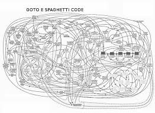

3B Engineering
Bigger, Better, 빨리!
Doorways
미생 : 김대리-장그래
"당신 실패하지 않았어. 나도 취직하기 되게 힘들었거든. 근데 합격하고 입사하고 나서 보니까 말이야, 성공이 아니라 그냥 문을 하나 연 것 같은 느낌이더라고. 어쩌면 우린 성공과 실패가 아니라 죽을 때까지 다가오는 문만 열어가면서 살아가는 게 아닐까 싶어."
"그럼 성공은요?"
"음..자기가 그 순간에 어떤 의미를 부여하느냐에 달린 문제가 아닐까.
일하다 보면은 깨진 계약인데도 성장한 것 같고 뿌듯한 케이스가 있어.
그럼 그건 실패한 걸까?"
"졌어도 기분 좋은 바둑이 있어요. 그런 걸까요?"
"잘은 모르지만, 그렇지 않을까? 내일부터 다시 잘 지내보자."
"감사합니다."


Who Am I?
Daniel Stonier
Yujin Robot Innovation Team Leader.
Embedded/Control Engineer
Algorithms Monkey
Software Architect
B Science., B Electrical Engineering, Phd. Mathematics.
Who Am I?
The journey...
- School
- Country boy dreaming of being a Jackaroo
- Academia
- Engineering & Math at University
- Math Professor for 2 years...no Jobs in Oz!
- PostDoc in Engineering at KAIST
- Work Experience at Yujin Robot
- Company
- Control & Embedded Systems Engineer
- Product Experience - Cleaning Robots
- Software Design Architect
- Product Experience - Turtlebot
- Lead Developer
- Innovation Team - aka Startup
From the outback to Seoul...to find what I love doing
Who Am I?
Why A Robotics Company?
It does it all:
Idea + Implementation + Product
New technology every day, every year
Hundreds of open doorways to explore
Contents
- Overview
- Working in a Team
- Problem Solving
- Quality Control
- The Developer Network
- Programming
- English
- Interesting Observations & Stories
- What Can You Do Now?
- Yujin Gophers & GoCarts
Overview
1) There are no rules.
But there are some good guidelines....always be ready to creatively break these if the situation demands...
2) This is actually mostly about people. About how to get the most out of yourself, but also how to
help your team be the best it can be (with least stress). Building a better product and helping your company
are of course also important, but in the end it is mostly about people. These will follow if you care for
the poeple first.
3) Some about processes (thinking and automation) to help you get where you want to be.
Working in a Team?
The happy guy/???
Problem Solving?
???
Quality Control
Assuring that the quality of a product does not get out of hand and add to the cost of its manufacture or design.
This is an interesting statement because it can go both ways - too much and too little quality control.
Developer Network
???
Programming
- Which Language?
- Style
- Debugging
- Scaling
- Testing
- Don't Reinvent the Wheel
- Sharing
- Letting Go
Which Language?
Food for thought
Style
Always think of the next or co-developer on the project
- This is the guiding principle of many google style guides.
- Avoid fancy if it can't be continued at your company.
Optimisation
Be careful of optimising too early
- Optimising code can take a looong time
- Optimising code can become complex and inflexible
- Wait for better cpus or invest in 1-2yrs of devel?
e.g. vision slam cpus
PC ->


How to Avoid Spaghetti
Typical company problem: consider 5 developers over 10 years all contributing to one project.
- Follow style guidelines above.
- If its not your project
- Follow the existing style...
be consistent
- Follow the existing style...
Be very careful about refactoring stable code
Scaling
| Standalone Programs | Libraries and Binaries |
| Makefiles | CMake/Catkin/Autotools |
| Platform code (e.g. QNX vs posix) | Abstracted Platform Code |
It is worth the time to learn tools to
Catkin Demo!!
Vision Slam Development
Old Yujin Process
- Make Compile on a virtual machine (5-10mins)
- Download
- Run for 10-20mins waiting for a bug
- Hack Code
- Repeat
New Yujin Process
- CMake/Catkin Compile Library/Binary Tree (<1min)
- Test Algorithms Locally with Recorded Data Sets
- Hack Code
- Sometimes download to robot for real world testing
- Repeat
DSlam Demo!!
Debugging
- GDB - Backtraces
- GDB - Core Dumps
- GDB - Remote Server
- Valgrind
- None of the above
Unit Testing
- Code design
- Separate platform code from algorithm code.
- Create dummy platform drivers, output good test data.
- Continuous Integration
- Jenkins
- Travis
Don't Reinvent the Wheel
When to use and when not to use?When to use AND contribute?
Sharing
When is it wise to share your own code?
- Is it a differentiator? If not, perhaps....
- Will extra users help make it stable?
- Will the benefits be worth the work?
Letting Go
It's hard to let go of something you created...
- When your project is outdated - enter a new doorway
- Think of this as an opportunity instead of a loss
- Einstein@Yujin
- Imperial College of London
- Be careful of managing too many projects
- You won't be able to do anything new
- Put some on hold
- Leave open projects in the wild
- Your rubbish can be someone else's gold!
Letting Go


English
Without it - Korea can be a Small Place
- Companies
- Daum
- Naver
- Cyworld
- OPROS
- Colleagues - 한규산
- Hardware - DSPF8212 --->
Interesting Observations and Stories
Small vs Big Companies
- Yujin vs Samsung
- Startup/OSRF vs Google
- What motivates the best developers?
- In Western Countries?
- In Eastern Countries?
- How to succeed as a small company?
Startup vs Old School
Clash of Philosophies
Hard to mix the energy and creativity of a Kakao with the old school leadership of a company like Yujin.
Yujin Nicknames
Impossible to Remember Korean Names
- Einstein
- 민장 / Jang Max
- 유연히 / Miss Accident
Users
They don't always do what you expect
Eunseong's Video!!!
What Can You Do Now?
Start Exploring the Real World Now
Watch How Others Work & Think
- Be a sponge for the next 5-10 years
- Join mailing lists
- Pick an open project you use (or at least have interest).
- Lurking is ok!
- But contributing is even better!
- Subscribe to email newsletters
- ...
What Can You Do Now?
Interested in startups?
IOT?
Just building your Network?
- Find people outside your field to talk with
- Join interesting groups, e.g. Seoul Tech Society
- Start hobby/research projects across disciplines
Roboworld
Robosem, Waiterbot and GoCart
Roboworld Video!!!
Gophers & GoCarts


GoCart Media!!!